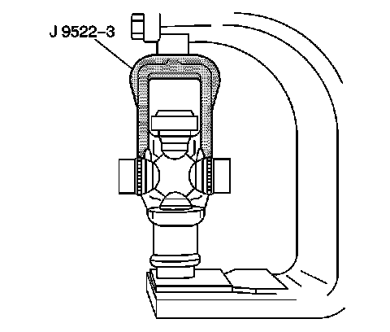
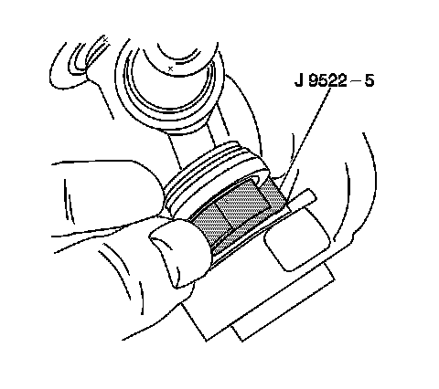
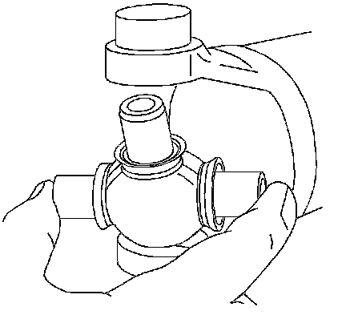
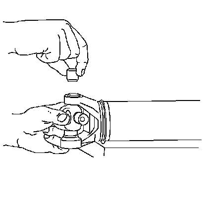
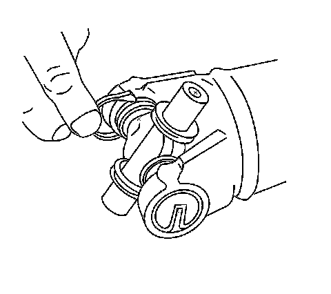
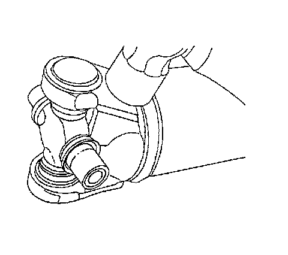

Universal Joint Replacement - External Snap Ring
Universal Joint Replacement - External Snap Ring
Tools Required
^ J 9522-3 U-Joint Bearing Separator
^ J 9522-5 U-Joint Bearing Spacer Remover
Disassembly Procedure
Notice: Never clamp propeller shaft tubing in a vise. Clamping could dent or deform the tube causing an imbalance or unsafe condition. Always clamp on one of the yokes and support the shaft horizontally. Avoid damaging the slip yoke sealing surface. Nicks may damage the bushing or cut the lip seal.
1. Support the propeller shaft in a line horizontal with the table of a press.
2. Mark the propeller shaft in order to show which end connects to the transmission and which end goes to the rear axle.
3. Disassemble the snap rings by pinching the ends together with a pair of pliers.
4. If the ring does not readily snap out of the groove in the yoke, tap the end of the cup lightly in order to relieve the pressure from the ring.

5. Place the universal joint so that the lower ear of the yoke is supported on a 30 mm (1-1/8 in) hex head socket or a 27 mm (1-1/16 in) socket.

6. Place J 9522-3 on the open horizontal bearing cups. Press the lower bearing cup out of the yoke ear.
7. If you do not completely remove the bearing cup, lift the cross and insert J 9522-5 between the seal and the bearing cup you are removing. Continue pressing the bearing cup out of the yoke.
8. Rotate the propeller shaft. Press the opposite bearing cup out of the yoke.
9. Mark the orientation of the slip yoke to the tube for proper reassembly.
10. Remove the cross from the yoke.
11. Remove the remaining universal joint parts from the yoke.
12. If you are replacing the front universal joint, remove the bearing cups in the slip yoke in the same manner.
13. Inspect the retaining ring grooves for dirt, corrosion, or pieces of the old ring.
14. Inspect the bearing cup bores for burrs or imperfections.
15. Clean the retaining ring grooves. Corrosion, dirt, rust, or pieces of the old retaining ring may prevent the bearing cups from pressing into place or prevent the bearing retainers from properly seating.
Assembly Procedure
1. Remove the bearing cups from the universal joint.

2. Assemble 1 bearing cup part way into 1 side of the yoke. Turn the yoke ear toward the bottom.
3. Assemble the cross into the yoke so that the trunnion seats freely into the bearing cup.

4. With the trunnion seated in the bearing cup, press the bearing cup into the yoke until the bearing cup is flush with the yoke ear.
5. Install the opposite bearing cup part way into the yoke ear.
6. Ensure that the trunnions start straight and true into both bearing cups.
7. Press the opposite bearing cup into the yoke ear while working the cross all the time in order to inspect for free unbinding movement of the trunnions in the bearing cups.
Important: If there seems to be a hang up or binding, stop pressing. Inspect the needle bearings for misalignment in the bearing cup.
8. Press the bearing cup into the yoke until the bearing cup retainer groove is visible over the top of the bearing cup.

9. Assemble the bearing retainer in the retainer groove.
10. Continue pressing until both retainers can be snapped into place.

11. If the retainer is difficult to seat, the yoke can be sprung slightly with a firm blow from a dead blow hammer.
12. It may be necessary to lubricate the snap ring with a slight amount of chassis grease so that the snap ring seats in the bearing cup groove.